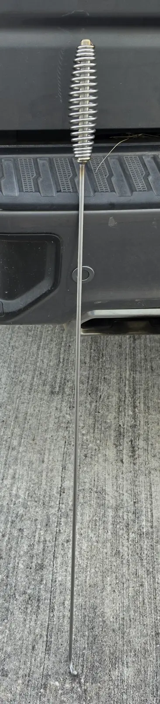
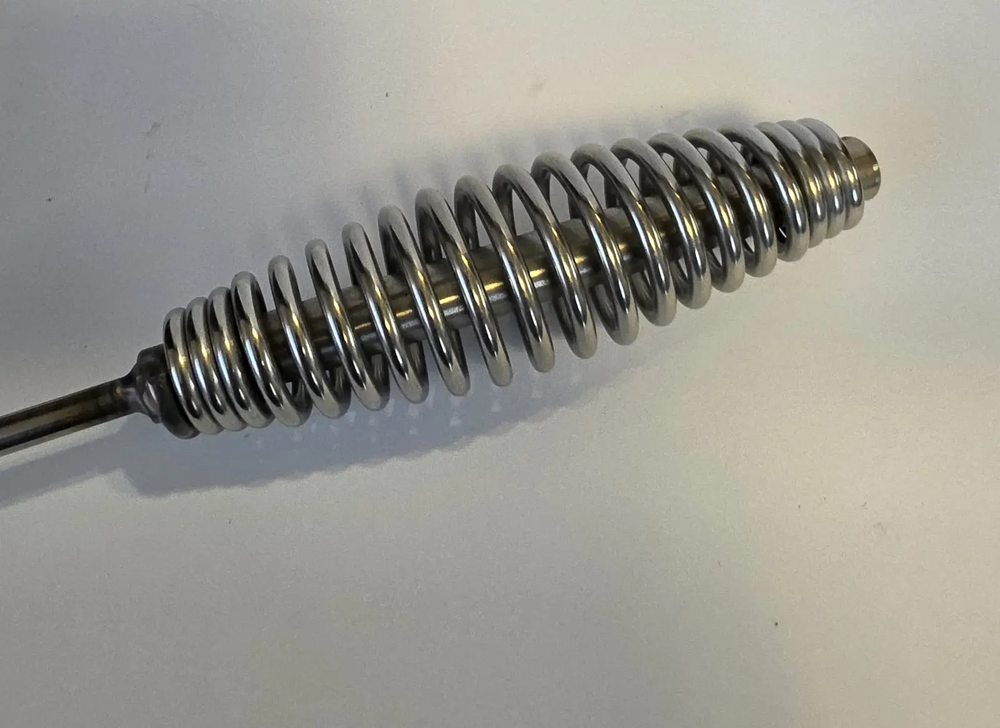
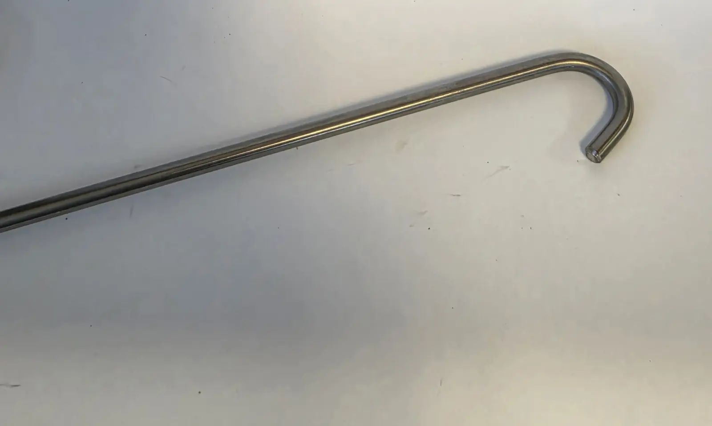

NEED A PART NOW0
NEED A PART NOW0TRUCK ACCESSORY
Go-Fer Stick — Stainless Steel Truck Bed Cargo Retriever
Pull cargo within reach without climbing into the truck bed.
A long-handled hook made from rust-resistant 304 stainless steel. Keep it in the truck bed year-round and use it to pull items from the front of the bed back within reach of the tailgate.
$39.99 · Shipped
Lifetime warranty against manufacturing defects.

BUILT FOR THE TRUCK BED
Leave it where you need it
Hang it from the side of the truck bed when it is not in use. Stored this way, it stays put instead of rolling around or rattling in the bed.
- MaterialRust-resistant 304 stainless steel
- Overall length39 inches
- Working reach34-1/2 inches from the handle to the hook tip
- Price$39.99 shipped
- WarrantyLifetime warranty against manufacturing defects


ABUSE TEST & STRAIGHTENING
See what happens when it gets bent
Watch the Go-Fer Stick abuse test and see how to straighten it yourself.